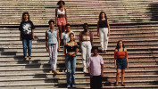

Ventre livre
|  |
VENTRE LIVRE Foto de Carlos Gerbase |
|
O país do futuro é onde as crianças engravidam? O maior país católico do mundo é onde mais de trinta mil mulheres morrem em conseqüência de aborto? A 10ª economia do planeta é a do país onde 27% das mulheres estão esterilizadas? VENTRE LIVRE conta um pouco da história de Vera, Ivonete, Carmen, Denise, Maria do Carmo, Marlove - pessoas que nasceram no país com a mais desigual distribuição de renda do planeta. Um documentário sobre direitos reprodutivos no Brasil, enquanto o futuro não chega. |
|
PRÉ-ROTEIRO | ROTEIRO DE MONTAGEM
MÚSICA ("Esta é a nossa história", de Leo Henkin)
Direção: Ana Luiza Azevedo
Produção Executiva: Nora Goulart
Roteiro: Ana Luiza Azevedo, Giba Assis Brasil e Rosângela Cortinhas
Direção de Fotografia: Alex Sernambi
Direção de Arte: Fiapo Barth
Música: Leo Henkin
Direção de Produção: Luciana Tomasi
Montagem: Giba Assis Brasil
Assistente de Direção: Amabile Rocha
Uma Produção da Casa de Cinema PoA
Elenco Principal:
Lisa Becker (Narração em português/inglês)
Rui Carvalho (Narração em português)
Robin Clein (Narração em inglês)
Ciça Reckziegel (professora)
Prêmios
22º Festival de Gramado, Cinema Latino, 1994:
Melhor Filme de Média-metragem Nacional, Melhor Curta Gaúcho, Melhor Montagem de Curta Gaúcho, Melhor Roteiro de Curta Gaúcho.
27º Festival do Cinema Brasileiro de Brasília, 1994:
Prêmio Especial do Júri, Melhor Montagem de Filme 16 mm.
19º Guarnicê de Cinema e Vídeo, São Luís, 1996:
Destaque do Júri Popular (4 melhores filmes), Melhor Argumento, Melhor Roteiro.
1º DerHumALC, Festival Latino-americano de Cinema e Direitos Humanos, Buenos Aires, 1997:
Melhor Documentário.
Crítica
"VENTRE LIVRE vai fundo em sua abordagem da questão do aborto no Brasil. Mereceu todos os prêmios que ganhou em Gramado: um tema tão difícil quanto árido é abordado com a justa firmeza que se faz necessária para encarar um problema social e moral."
(Tuio Becker, Zero Hora, 18/08/94)"Ana filma com o olhar feminino da privilegiada que teve os filhos que quis e com a compaixão da artista solidária e sensível. Um filme para ser visto e revisto na TV, nas escolas, nos centros comunitários, nas ruas e nas praças. Vê-lo é um dever cívico."
(Luiz César Cozzatti, Jornal RS, 20/08/94)"VENTRE LIVRE fala de desigualdades. De direitos desiguais, vidas desiguais, entre ricos e pobres, entre homens e mulheres. Apresenta números e estatísticas, assume um discurso, mas não é retórico, nunca. Ana Luiza e seus co-roteiristas (...) tiveram a coragem de acreditar no seu tema. Não enfeitaram nada, apenas souberam ver e ouvir. E são visíveis, plano a plano, o carinho e a indignação com que o filme foi feito. É essa a sua força."
(David França Mendes, revista Imagens, São Paulo, setembro de 1994)"A força de seus argumentos, mas também a eficiência com que estabelece a comunicação com o espectador, explicam por que este filme (...) obteve o primeiro prêmio em seu gênero no Festival Latino de Gramado, este ano. Mais que simplesmente dar opinião, procura transmitir uma convicção, uma vivência. Há uma tomada de posição comunicada claramente, como um ato de decisão e portanto com resultados políticos ativos. É justamente esse caráter que faz tão respeitável e necessário o resultado."
(Manuel Martínez Carril, Revista Cinemateca Uruguaya nº 238, outubro de 1994)"Ana Luiza Acevedo's Ventre Livre (Free Womb, 1994) is a highly engaging documentary about a subject too easy to pontificate about -- women's health and reproductive rights in the world's most populated Catholic country. Acevedo manages to convey vital information with intelligence and good humor, playing off documentary conventions instead of being trapped by them. In addition, the outstanding editing skills of Casa de Cinema's Giba de Assis Brasil shine in this film."
(Coco Fusco, AFTERIMAGE, 01/10/1994)"Uma das entrevistadas - a bela e jovem Carmem - leva os espectadores à mais pura emoção. Mãe solteira, bem jovenzinha, doou o filho a desconhecidos. Na parte final de VENTRE LIVRE, a vemos de novo com o ventre ocupado por outra gravidez solitária. O pai, outro, tirou o corpo fora."
(Maria do Rosário Caetano, Jornal de Brasília, 27/11/94)"O filme começa com números sobre a nossa desigualdade social. Mas não pára nos números. É preciso entender, muito profundamente, que cada número nessas estatísticas é um ser humano como você. Ventre livre é um filme capaz de comunicar isso, com talento. É bom cinema, porque é justo."
(David França Mendes, Estação Virtual, 01/08/96)
13/08/1994
| Anexo | Tamanho |
|---|---|
| Ventre_livre.mp3 | 2.22 MB |